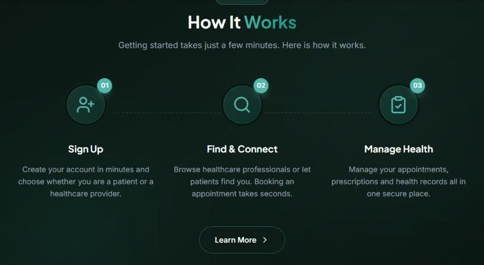
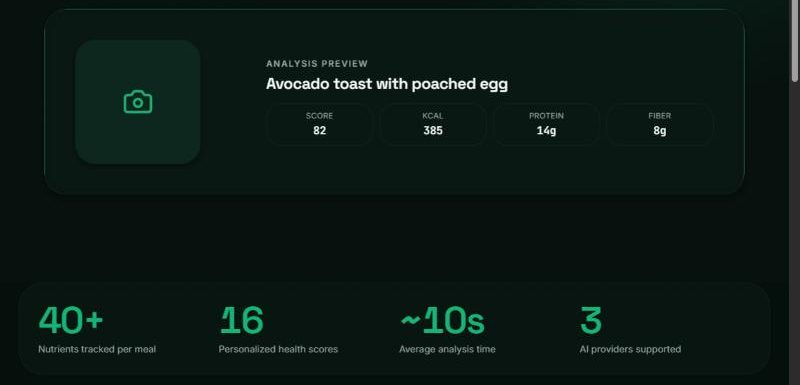

Getting a multi-sided health platform ready for launch
Doctorevs connects patients with doctors, facilities, pharmacies and laboratories, with appointments, video consultations, prescriptions and records in one place. It's in beta testing and hasn't onboarded real users yet.
- Role
- Product manager
- Team
- [BERLINDA TO CONFIRM: engineering, design, founders]
- Stage
- Pre-launch, beta testing
- Timeline
- [BERLINDA TO CONFIRM: dates]
- Product
- doctorevs.com ↗

01The problem
Getting care means finding a provider you can trust, booking them, consulting, then handling prescriptions, lab tests and records. Those steps usually live in different places.
A platform that joins them up has to serve eight kinds of user at once, each needing different screens, permissions and steps:
Care seekers
- Patients
Care providers
- Doctors
- Nurses
- Facilities
Fulfilment
- Pharmacies
- Laboratories
Oversight
- Administrators
- Support
02Evidence
Requirements came from structured discussions with stakeholders across the roles above. I turned those conversations into documented requirements and user stories before the build, then into a release scope.
Stakeholders and provider types consulted: [BERLINDA TO CONFIRM: number].
03Decisions and trade-offs
Role-based workflows
DecisionEach role gets its own path and permissions. A patient books and consults; a pharmacy fulfils; an administrator oversees.
Trade-offMany more paths to design and test than a single shared flow.
Dynamic forms
DecisionForms adapt to the role and service instead of one long form for everyone.
Trade-offMore configuration and more test cases, for a simpler experience per user.
Beta before onboarding
DecisionTest every role path end to end in beta before real patients or providers join.
Trade-offSlower to market, but lower risk for a product that handles health information.
Professional verification, role-based access and careful handling of records and prescriptions are design considerations built into scope. They are not claims of clinical, regulatory or security certification.
04Execution
Requirements
Stakeholder discussions into documented requirements
Design
Role-based workflows and dynamic forms
Build
Engineering against the documented scope
Test
QA, bug triage and fixes
Demo
Stakeholder walkthroughs and feedback
Beta
Where it is now, before launch


What I did
- Turned stakeholder discussions into structured requirements and release scope
- Defined the role-based workflows and dynamic forms with the team
- Ran product testing, QA and bug triage across roles
- Kept product documentation and action items in Confluence
- Ran stakeholder demos and folded feedback back in
- Planned doctor engagement and early-user strategy for launch
What the team did
- Engineers built the platform
- Design shaped the role-based interfaces
- Clinical and domain input: [BERLINDA TO CONFIRM: who]
05Outcomes
Where it stands: Doctorevs is in beta testing and hasn't onboarded real users yet. The next milestone is onboarding the first doctors, then patients.
06What I learned
- Multi-sided products succeed on coordination, not just features. Every role's path has to work before any of them can launch.
- Trust belongs in scope from day one. Verification and access control are much harder to add later.
- Testing and demos turn requirements into readiness.